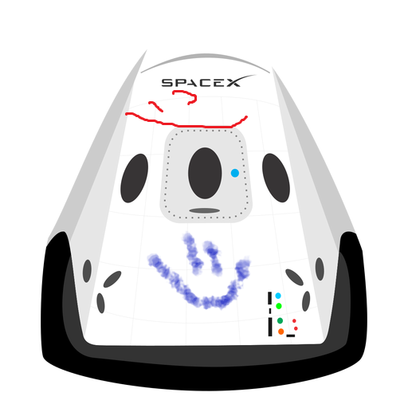

Hyperblog
ANGIE POST MARAVILLOSO
Iniciando un gran proyecto
Y este es el párrafo de inicio donde vamos a explicar las cosas increíbles que se pueden hacer con ramas
Los blogs son la mejor forma de compartir información y tus ideas. Mucho mas que ir a conferencias o salir en Youtube. Excepto si eres un rockstar. Pero estadísticamente no lo eres.... por ahora.

AMOR Y PAZ
Soy mas feliz
HECHO CON AMOR EN PLATZI